川を泳ぐのはちょっぴり苦手だけど、大空を気持ちよく泳ぐことができる不思議な鯉。
高知県四万十町立十和中学校の生徒たちの豊かな発想から生まれた、
十和地域の公式マスコットキャラクター「のぼりん」のオフィシャルサイトです。
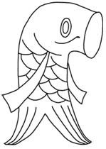
公式原画①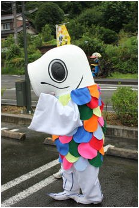
公式原画②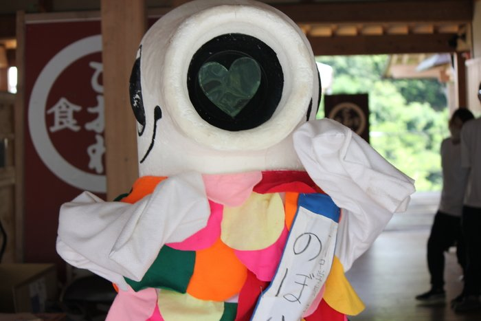
実車写真
十和村（現・四万十町十和）発祥の伝統行事「こいのぼりの川渡し」をモチーフに誕生したキャラクター。
川は泳げないけれど、大空を気持ちよさそうに泳ぐことができます。
いつか立派な竜（ドラゴン）になる日を夢見て、日々がんばっています。
のぼりんと一緒に十和を明るく元気にしている仲間たちです。
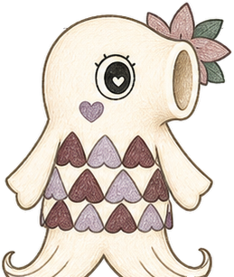
のぼりんの大切な彼女
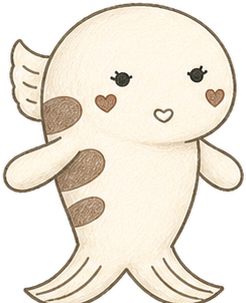
あめごの養殖場の箱入り娘
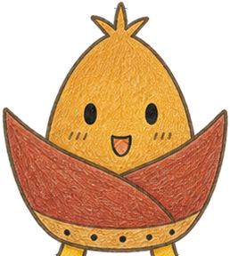
小野の山から生まれたタケノコ
十和中学校の生徒たちが総合的な学習の一環として生み出し、地域に育てられてきた歩みです。
十和中学校の生徒会執行部が「全校生徒の手で学校と地域のマスコットキャラクターを作ろう」と提案。
生徒から寄せられた図案の中から、全校投票によって「こいのぼりの川渡し」をモチーフにした「のぼりん」が決定しました。
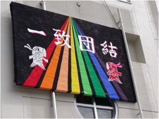
「あめ芝」「たけぽん」が仲間に加わり、生徒全員が株主となる模擬会社「株式会社のぼりん」を設立。
キャリア教育・起業家学習として、クッキーや木工品の製造・販売などの実践的な地域活動がスタートしました。
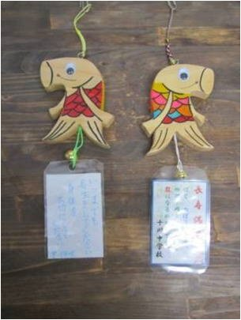
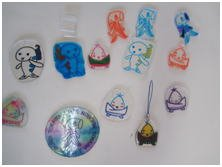
高知市の「こうち漫画まつり まんさい」じもキャラストリートに出展し、生徒自らグッズやクッキーを販売。
生徒たちの熱心なクッキー作りの取り組みが町議会でも報告され、学校調理室へのエアコン設置予算が可決・整備されました。
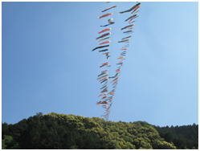
のぼりんの大切な彼女「みのりん」が誕生。
テレビ番組の取材を受けるなど、学校内にとどまらず高知県内各地へと活動の輪が広がっていきました。
生徒会役員が四万十町役場十和地域振興局を訪問し、地域マスコット認定に向けた直談判プレゼンを実施。
その熱意が実を結び、振興局より正式に「十和地域のマスコットキャラクター」として公認を受けました。さらにJR予土線のトロッコ列車にも「のぼりん」が乗車しました。
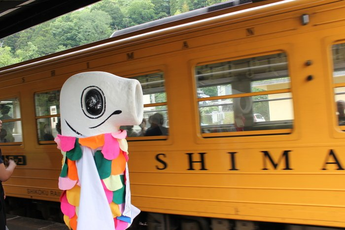
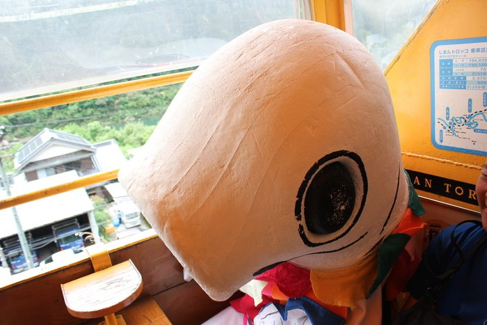
十和の熊野神社で開催された音楽イベント「神JAZZ」にて、地域おこし協力隊が生徒会の意見を取り入れて作詞・作曲した公式テーマ曲「のぼりんソング」が初公開されました。
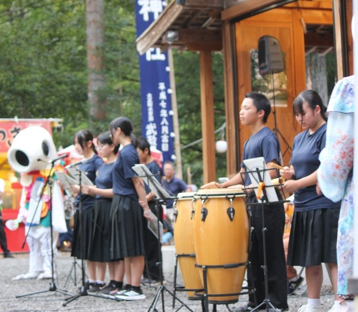
日本最後の清流・四万十川の中流域に位置する、豊かな自然と温かい人の温もりにあふれた里山です。
昭和49年、十和の青年たちが始めた「こいのぼりの川渡し」。四万十川の上空を約500匹のこいのぼりが泳ぐ雄大な光景は、全国に広がる川渡しの元祖です。
のぼりんの大好物でもある鮎の塩焼き。透き通る支流で育つあめごや四万十川の恵みは、訪れる人々に親しまれています。
山あいの豊かな寒暖差が生み出す極上の和栗「しまんと地栗」や、四万十川の朝霧を浴びて育つ「十和茶」。「道の駅四万十とおわ」でも大人気です。
増水時に川の中に沈むよう設計された欄干のない橋。四万十川の流れと緑豊かな山々、そして沈下橋が織りなす風景は十和の誇りです。
四万十町立十和中学校は、四万十川の中流域・十和地域にある小さな学校です。
少人数だからこそ、学年の垣根を越えて全員が近い関係。
先生と生徒、そして地域の方々との距離がとても近く、温かい絆の中で日々学んでいます。
「株式会社のぼりん」を模した模擬会社を立ち上げ、木工品やクッキーの商品化、そして十和地域振興局への直談判プレゼンまで成し遂げました。「自分たちの手で地域を元気にしたい」という純粋な熱意が、大人たちを動かしました。
神社の境内でJAZZとコラボ！ 地域おこし協力隊と中学生の想いから生まれた公式ソングです。
2025年7月、十和の熊野神社で開催された音楽イベント「神JAZZ」にて初披露された公式テーマソング。
十和地域おこし協力隊が、十和中学校生徒会から出されたアイデアやキーワードをもとに作詞・作曲を手がけました。
川を泳ぐのはちょっぴり苦手。
でも、大きな大空ならどこまでも気持ちよく飛んでいける！
生徒たちの創意工夫が詰まったオリジナルアイテムです。
地元の木材を活かして生徒たちがデザイン・制作した温かみのある木工雑貨です。
学校祭・地域イベントにて販売生徒たちが試行錯誤を重ねて焼き上げた特製クッキー。サクサクの香ばしい味わいが地域でも大好評です。
限定イベントにて販売のぼりんの可愛いイラストがプリントされたオリジナルTシャツ。行事やイベントで活躍しています。
生徒会企画アイテム現在LINEスタンプの制作・リリースに向けて企画を進めています。
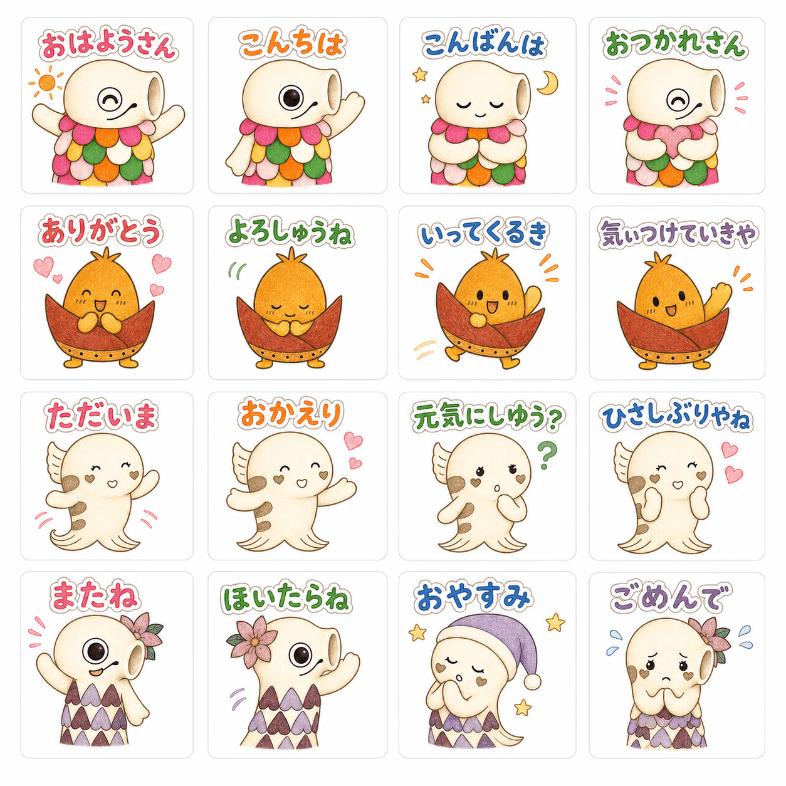
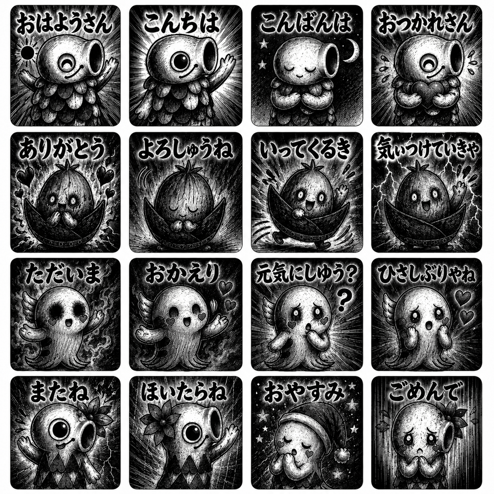
地域と生徒たちをつなぐ、のぼりんの活動風景です。
四万十川の風を感じながら走る観光列車に乗車しました。
テーマ曲「のぼりんソング」が初披露された歴史的瞬間。
十和地域振興局長より認定証を授与された記念写真。
生徒たちが笑顔で地域の皆様に商品を手渡しました。
「のぼりん」は十和地域を盛り上げるためのマスコットキャラクターです。
地域イベントのチラシ、店舗のPOP、特産品のパッケージなどでの活用をご希望の際は、下記窓口までお気軽にお問い合わせください。
TEL: 0880-28-5215
キャラクターデザインの著作権管理、生徒会との連携企画など
TEL: 0880-28-5111
地域イベントでの活用、観光振興における連携など